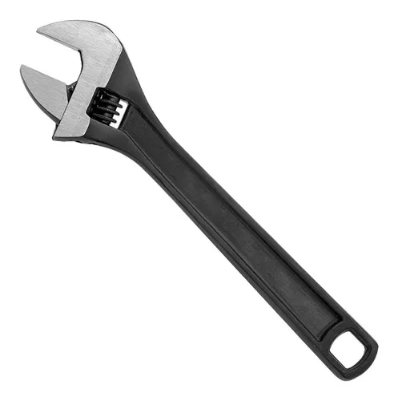

Productos

Perico
Descripción
Código: 160017
Llave Perico Negro 8" 87046 Stanley
…………………………………………………..
Características:
-Llave Perico Negro 8" Stanley 87046
-Cuerpo En Acabado Fosfatado Para Evitar La Corrosión.
-Escala Métrica Y En Pulgadas En La Cabeza.
-Ansi B107.8M
Llave Española
Descripción
Un juego de llaves combinadas universales reemplaza cuatro juegos en tu caja de herramientas! El extremo de la caja ranurada también maneja una amplia variedad de tamaños y sujetadores redondeados. El extremo abierto rápido proporciona una velocidad similar a la de un trinquete para una rápida extracción e instalación.
El extremo de la caja ranurada maneja sujetadores redondeados de 6 puntos, 12 puntos, cuadrados, E-Torx®
Extremo abierto rápido para una acción rápida similar a un trinquete
Panel levantado
Ángulo de desplazamiento: 15 grados.
Acero al cromo vanadio
Acabado de fosfato negro
Las llaves cumplen con los estándares ANSI
Presupuesto
Juego de llaves combinadas universales SAE de 7 piezas
SKU 69330
Marca Pittsburgh Pro
Certificación ANSI
Recubrimiento de fosfato negro
Material Chrome vanadium steel
Cantidad 7
SAE o Métrica SAE
Peso de Envío 1.35 lb
Tamaño (s) 5/16 in., 3/8 in., 7/16 in., 1/2 in., 9/16 in., 5/8 in., 11/16 in.